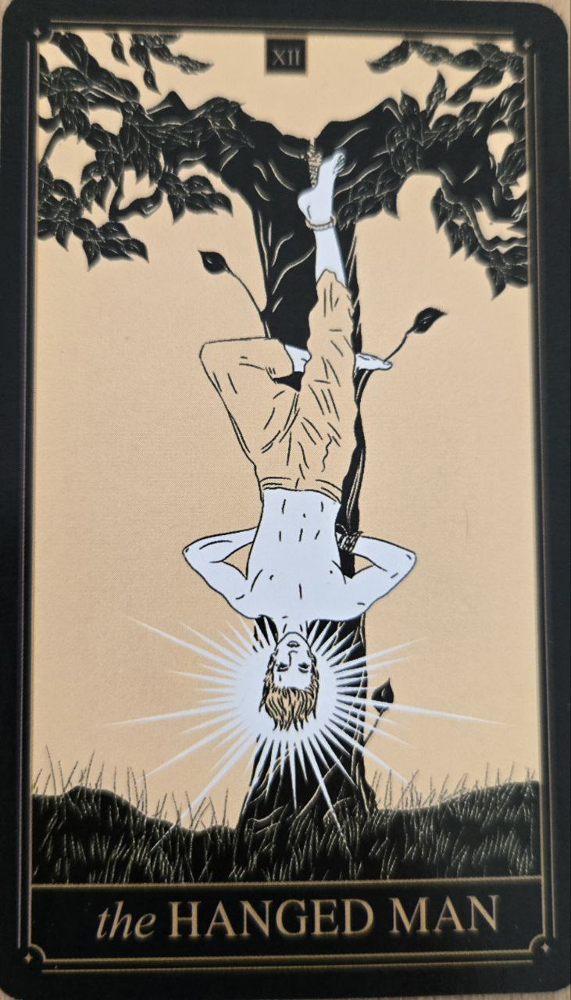

Obesenec predstavuje nový pohľad na situáciu a schopnosť pustiť sa zaužívaných predstáv. Je to karta zastavenia, ktoré môže viesť k hlbšiemu pochopeniu.
Na prvý pohľad môže pôsobiť nepríjemne, no jej význam je často pozitívny.
Karta symbolizuje trpezlivosť, zmenu perspektívy a ochotu pozrieť sa na problém inak.
Naznačuje obdobie, keď nie je potrebné konať okamžite, ale najprv pochopiť širší obraz.
Postava visí dolu hlavou, no jej výraz býva pokojný. Táto nezvyčajná poloha predstavuje schopnosť vidieť veci z nového uhla pohľadu.
Svetlo okolo hlavy symbolizuje nové poznanie alebo uvedomenie.
Obesenec často ukazuje, že najväčší pokrok môže vzniknúť práve vtedy, keď sa človek na chvíľu prestane snažiť všetko kontrolovať.